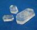
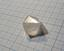
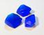
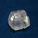
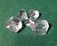
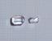

Crystal Growing Collection

Sulfates
     
Sulfates are salts of the sulfuric acid H2SO4. Many of them are a good material for growing crystals, because of their stability and solubility.
- Lithium sulfate, Li2SO4
- Potassium sulfate, K2SO4
- Lithium potassium sulfate, KLiSO4
- Copper(II) sulfate, CuSO4·5H2O
- Sodium ammonium sulfate, NH4NaSO4·2H2O
Sulfuric acid also forms salts or adducts with some organic compounds and complex ions.
- Triglycine sulfate 3NH2CH2COOH·H2SO4
- Hexakis(urea) zinc sulfate [Zn(CON2H4)6]SO4·?H2O
Double sulfates: Tutton's salts
There are many sulfates that have 2 different metals in it, in stoichiometric proportion. They form several families of similar compounds. Tutton's salts are compounds of general formula: MI2MII(SO4)2·6H2O, where MI and MII stand for univalent and bivalent anions. In mineralogy, they are called schoenites.
- Ammonium zinc sulfate (NH4)2Zn(SO4)2·6H2O
- Potassium zinc sulfate K2Zn(SO4)2·6H2O
- Ammonium iron(II) sulfate (NH4)2Fe(SO4)2·6H2O, also known as Mohr's salt.
- Potassium magnesium sulfate KMg(SO4)2·6H2O, mineral schoenite.
- Mixed K-Mg and K-Cu schoenite, K2(Mg0.5Cu0.5)(SO4)2·6H2O
Double sulfates: bloedite family
Bloedites are similar to Tutton's salts (schoenites), but have 4 molecules of water instead of 6. They also can include Na ions.
- Sodium zinc sulfate Na2Zn(SO4)2·4H2O, mineral Changoite.
Double sulfates: alums
Alums are the family of similar double sulfates of general formula: MIMIII(SO4)2·12H2O, where MI and MIII stand for univalent and trivalent anions. MI is usually one of K, NH4 but can be other: Na, Rb, Tl. Trivalent metal MIII is usually one of Al3+, Fe3+, Cr3+.
- Potassium Aluminum sulfate KAl(SO4)2·12H2O, usually called just "alum" or potassium alum. The most representative member of this family.
- Ammonium Aluminum sulfate NH4Al(SO4)2·12H2O, less common compound that is visually indistinguishable from the potassium salt.
- Ammonium Iron(III) sulfate NH4Fe(SO4)2·12H2O, or ferric alum.
Phosphates
Salts of phosphoric acid H3PO4.
- Ammonium dihydrogen phosphate NH4H2PO4. A common fertilizer, giving nice columnar crystals.
Acetates
Salts of acetic acid. Most acetates are soluble, but few of them are suitable for growing nice crystals.
- Calcium copper acetate CuCa(CH3COO)4·6H2O
- Copper acetate Cu(CH3COO)2·H2O
Nitrates
Salts of nitric acids HNO3. Most of nitrates are extremely soluble in water and deliquescent, which makes them badly suited for growing.
- Ammonium calcium nitrate 5Ca(NO3)2·NH4NO3·10H2O
- Barium nitrate Ba(NO3)2
Chlorides
- Sodium chloride NaCl, table salt (very hard to grow)
- Potassium chloride KCl, much better growing potassium sibling of table salt.
- Ammonium chloroferrate (NH4)2[FeCl5(H2O)], mixed chloride or ammonium and iron (III).
- Ammonium tetrachlorocuprate (NH4)2[CuCl4].
Oxalate complexes
Alumooxalates
Alumooxalates are salts of the complex anion [Al(C2O4)3]3+. They are colorless crystalline solids.
- Potassium tris(oxalato) aluminate K3[Al(C2O4)3]
- Sodium tris(oxalato) aluminate Na3[Al(C2O4)3]
Ferrioxalates
Ferrioxalates are salts of the complex anion [Fe(C2O4)3]3+, they have beautiful green color, unusual for iron (III) compounds. They are slightly light sensitive and must be stored in dark place.
- Lithium tris(oxalato) ferrate(III)Li3[Fe(C2O4)3] - lithium salt of the same green complex, flat crystals.
- Lithium tris(oxalato) ferrate(III) chlorideLi4[Fe(C2O4)3Cl] - double salt with two different anions: ferrioxalate and chloride. Crystals are shaoed as triangular prisms.
- Sodium tris(oxalato) ferrate(III) Na3[Fe(C2O4)3] - unstable but beautiful green crystals
- Potassium tris(oxalato) ferrate(III) K3[Fe(C2O4)3] - green crystals, more stable to dehydration than sodium salt.
- Sodium potassium tris(oxalato) ferrate(III) K5Na[Fe(C2O4)3]2 - anhydrous crystals of deep green color, lesser known relativeof the above two salts. Very recommended for growing!
Sulfamates (amidosulfonates)
Sulfamic (also known as amidosulfonic) acid is a moderately strong inorganic acid HSO3NH2. Its primary household use is a descaler agent. Unlike sulfuric acid, it is solid. Almost all sulfamates have extremely high solubility.
- Sulfamic acid, H3NSO3 - the acid itself forms shiny rectangular tablets
- Potassium sulfamate, KSO3NH2, potassium salt for the above acid, crystallizing in a similar shape
- Potassium bis(sulfamato) chlorocuprate, K2[Cu(SO3NH2)2Cl2] - a very interesting sulfamate complex, shiny dark violet sticks
- Potassium bis(sulfamato) bromocuprate, K2[Cu(SO3NH2)2Br2] - bromine analog of the above complex, black tablets with green tinge
- Ammonium bis(sulfamato) chlorocuprate, (NH4)2[Cu(SO3NH2)2Cl2] - ammonium analog, dark blue tablets
Organic
- Urea citrate CO(NH2)2·C3H4(OH)(COOH)3 cocrystal of urea and citric acid.
- Saccharin Free acid of saccharin, insoluble in water.
- Sodium saccharin Sodium salt of saccharin, once popular sugar substitute.
Carbohydrates and related compounds
- Erythritol C4H10O5 another sugar alcohol, lighter cousin of a xylitol.
- Xylitol C5H12O5 sugar alcohol, used as sugar substitute.
- MannitolC6H14O6 another sugar alcohol.
- Glucose sodium chloride 2C6H12O6·NaCl·H2O cocrystal of glucose and table salt NaCl
- Glucose sodium bromide 2C6H12O6·NaBr·H2O heavier sibling of the above compound, cocrystal of glucose and NaBr
Aminoacid salts
- Glutamic acid hydrochloride C3H5(NH2)(COOH)2·HCl
- Glycyne oxalate 2:1 (NH3CH2COOH)2C2O4 - glycine salt of oxalic acid
- Copper β-alaninate Copper salt of the β-alanine amino acid.
- Copper β-alaninate urea adduct of the above compound with urea. Beautiful dark violet crystals that are stable on air.
Various inorganic
- Sodium Potassium tartrate KNaC4H4O6·4H2O, Rochelle salt
- Sodium citrate Na3C3H4(OH)(COO)3·?H2O
- Sodium tetraborate Na2B4O7·10H2O, known as borax
- Sodium boro-formate NaH2BO3·2HCOOH·2H2O - scarcely described compound, formed by sodium borate and formic acid.